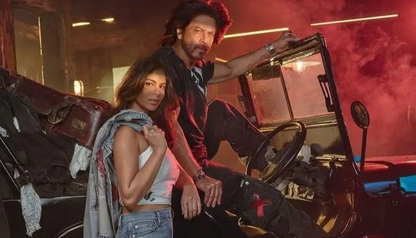
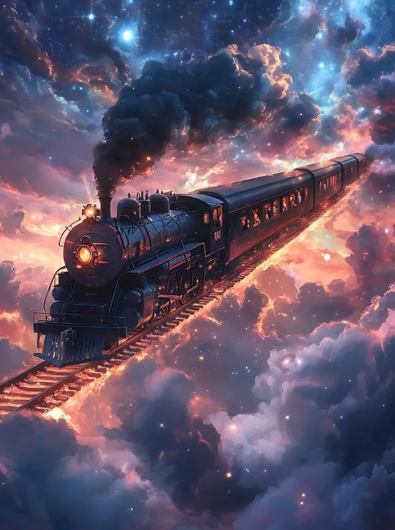
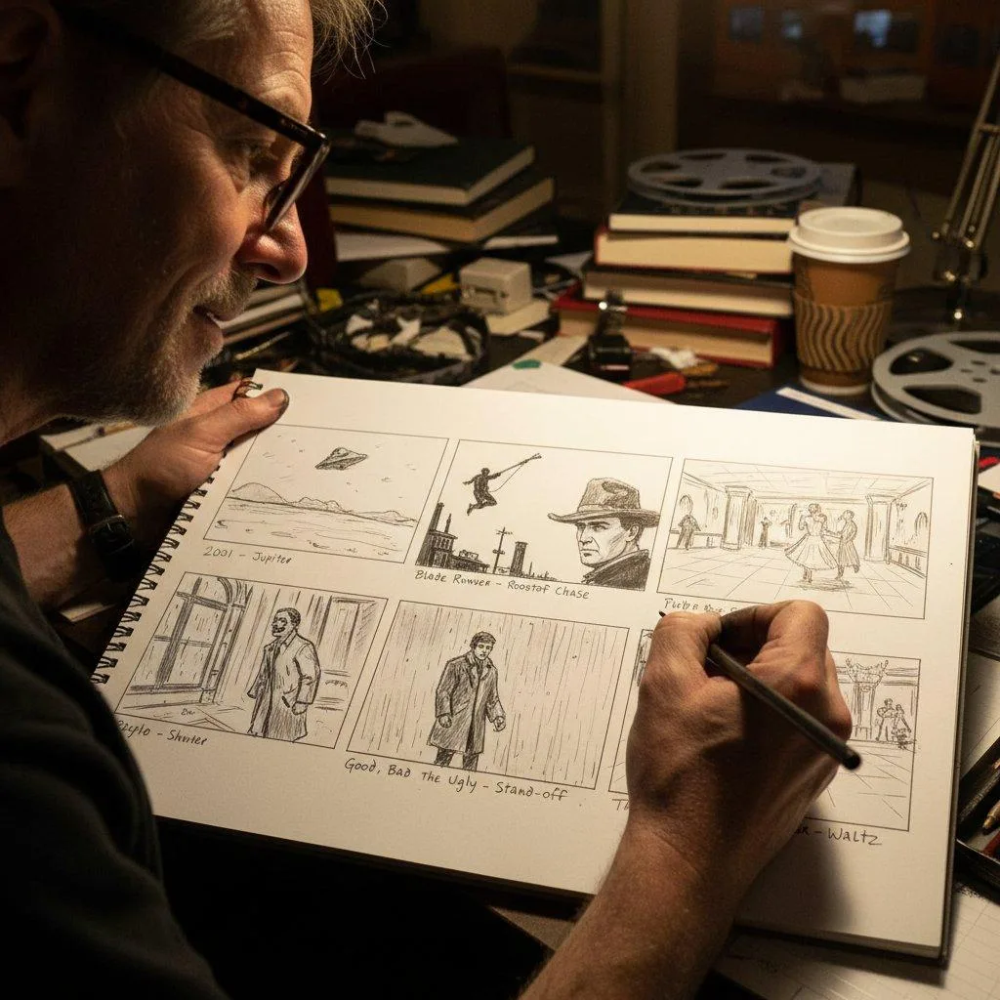

The Final Thesis · section 25 of 92
PART VI — KING: THE FILM, THE FANDOM AND THE UNFINISHED EXPERIMENT
December 2026: What might the next chapter look like?


The public anticipation surrounding KING is taking place against an extraordinary background.
The film is scheduled for release on 24 December 2026, according to the publicly reported release announcement. The project brings Shah Rukh Khan together with director Siddharth Anand and includes Suhana Khan in a significant role.

Bollywood News - The Indian Express
+1
The title alone invites a cultural reading.
For a performer whose career has repeatedly explored the relationship between identity, power, love, celebrity and reinvention, KING is an unusually resonant name.
But a title is not a manifesto.
A film called KING does not prove that its story is a personal revenge narrative, a response to the events of 2021 or a coded message to any institution or individual.
Those interpretations belong to the realm of audience speculation unless supported by the filmmakers' statements or the film itself.
The more productive question is what KING could represent in the evolution of the Shah Rukh Khan entertainment ecosystem.
There are at least three dimensions to examine.
1. The cinematic dimension
The first is the film itself.
The public has seen a star move from romantic hero to action performer, from a digital superhero to a character who can carry a pan-Indian action spectacle.
KING arrives after the extraordinary commercial performance of Pathaan, Jawan and Dunki.
It will be judged as a film: by its storytelling, performances, direction, production and audience response.
Nothing in the larger business narrative substitutes for that creative test.
2. The fan-powered dimension
The second dimension is the possibility of a participatory campaign.
This is where the history of Ra.One and Chennai Express becomes especially relevant.
The earlier campaigns established that a film could extend into gaming, character merchandise, interactive content, fan participation and shared digital experiences.
A contemporary fan platform could take those principles further.
The following is a proposed campaign architecture, informed by the historical case studies and Gupta's stated creative direction. It is not a description of an announced official KING campaign.
Proposed concept — not an official announcement
KING FAN ARENA: O TO X — MY MATH
A fan-powered storytelling system inspired by the principles of Chennai Express and the open-source entertainment model.

01 — The story builder
Fans build stories through a structured system for duos, trios and expandable ensembles. Each participant can add original ideas, characters, dialogue and story developments.

02 — KING EXPRESS
A fan-powered journey in which collective creative milestones advance a virtual train, unlock new prompts and reveal additional chapters or challenges.

03 — The AI bioscope
A storytelling and storyboard environment where fans can experiment with original scenarios, visual concepts, narrative branches and shareable creations.
04 — The fan franchise
A framework for fan clubs to collaborate, build original creative work, participate in challenges and share community achievements.
The central proposition is simple:
Fans do not have to wait for the next piece of promotional content.
They can help create the surrounding experience.
That is a natural evolution of the Chennai Express principle. Instead of a virtual train moved by tweets alone, the journey could advance through collaborative stories, challenges, original art and fan-created milestones.
It would be a campaign that treats fans as creative participants while preserving a clear distinction between official film material and original fan contributions.
A local prototype could demonstrate the story builder, storyboard, fan challenges and exportable creative work. A live global community would require additional infrastructure for accounts, moderation, rights management, shared data and community operations.
This is an actionable concept—not evidence that the film's producers have adopted it.
3. The business and technology dimension
The third dimension is the possible convergence of entertainment, sports, technology and fandom.
The Knight Riders ecosystem demonstrates that a celebrity-associated brand can become a platform involving franchises, physical infrastructure, events and international audiences.
FLAM's announced investment round provides a documented connection between Khan and a company working in interactive AI content.
Gupta's SRKWORLD history provides a separate, firsthand account of an earlier attempt to build technology around entertainment and fan engagement.
Together, these threads form a legitimate subject for further research.
They do not establish a secret merger, an undisclosed technology contract or a coordinated KING launch.
The question is whether the next generation of entertainment marketing can combine these elements into a coherent system.
A KING campaign could, in principle, connect film storytelling, fan-created content, interactive AI, global fan communities and long-term franchise development.
But the distinction between a compelling opportunity and an actual production plan must remain clear.
The former can be analysed now.
The latter requires evidence.